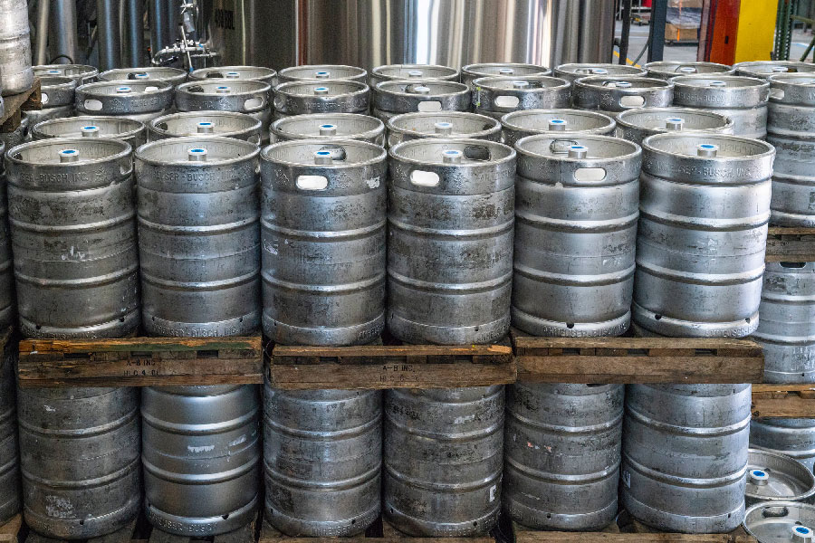

_
Cerveza de origen británico.
Cuenta con un sabor
amargo intenso, cítrico y
herbal. Espuma pronunciada.
Cuerpo medio alto. Su
maduración tarda más de
dos semanas. 6% alcohol,
IBU 90.
Porter
_
Cerveza negra y cremosa,
con un ligero sabor tostado.
Su receta es de origen
inglés y su maduración
toma mínimo dos semanas de
maduración.
5% alcohol, IBU 23.
Ale
_
Cerveza rubia, refrescante
y suave, con un equilibrio
perfecto entre sus sabores.
Con una generosa adición
de miel orgánica colombiana.
Su maduración
tarda dos semanas. 5% alcohol,
IBU 23.
Lager
_
Es nuestra única cerveza
estilo Lager, rubia, con
una receta de origen
alemán. Es suave y refrescante,
elaborada sin adjuntos
ni colorantes, solo
con lúpulos nobles y las
mejores cebadas malteadas.
Su maduración tarda más de
21 días, para luego ser
embotellada. 5% alcohol,
IBU 23.
CERVEZAS EN TEMPORADA
Staut
_
Cerveza negra intensa, más
robusta que las negras
tradicionales, receta de
origen irlandés. Cuenta
con una corona espesa de
espuma, sabores intensos a
caramelo y a tostado, con
unos toques ligeros de
dulce que provienen de la
avena. Su maduración toma
dos semanas. 5% alcohol,
IBU 45.
Weiss
_
Cerveza de trigo, turbia
por naturaleza y típica de
los alrededores de Münich,
Alemania. Contiene aromas
a banano y clavos, propios
de este estilo, provenientes
de la fermentación. 5%
alcohol, IBU 17.

Nuestras cervezas son elaboradas en pequeñas cochadas de producción con ingredientes naturales de alta calidad. Siempre que tengas una cerveza Tierra Santa en la mano tendrás un producto fresco, elaborado con los mejores ingredientes y preparado inspirado en las mejores recetas europeas. No usamos adjuntos, como maíz o arroz, ni preservantes ni colorantes. Solo usamos cebadas y lúpulos importados de la mejor calidad, que mezclamos con agua pura de nuestra ciudad Bogotá.